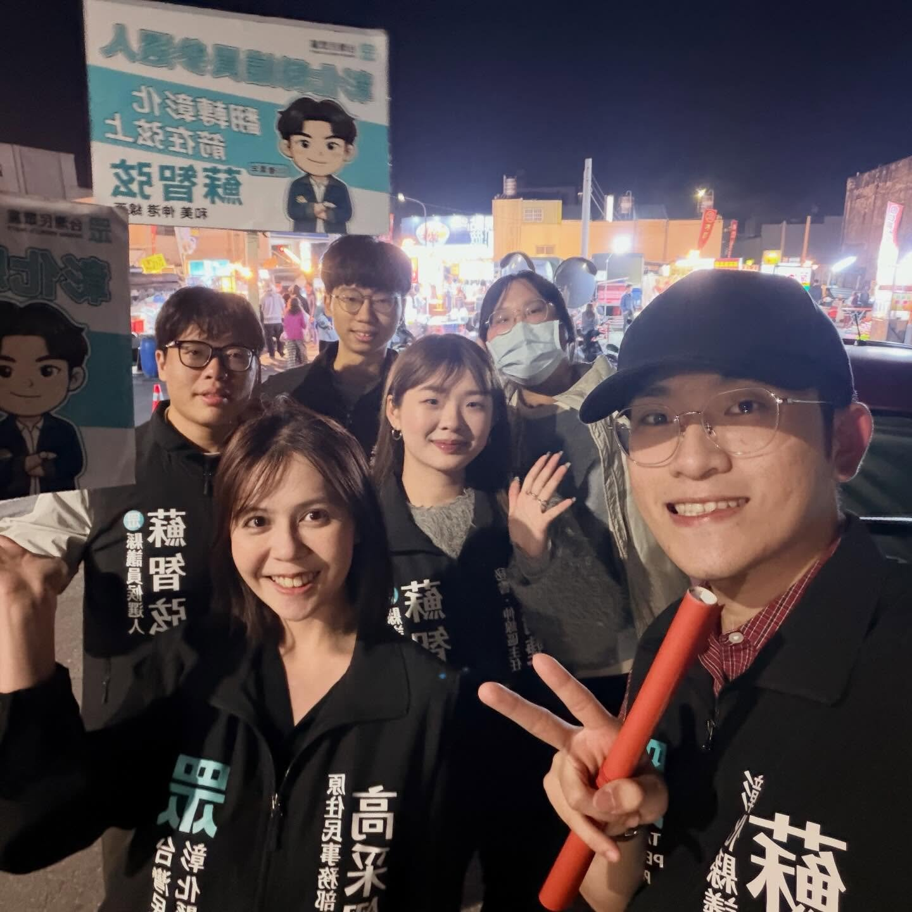
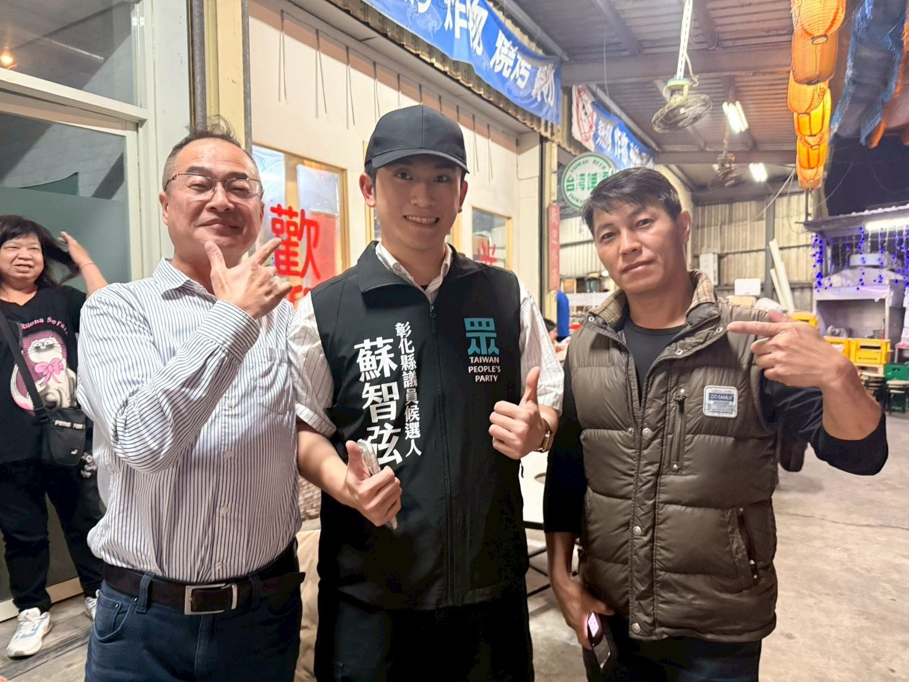
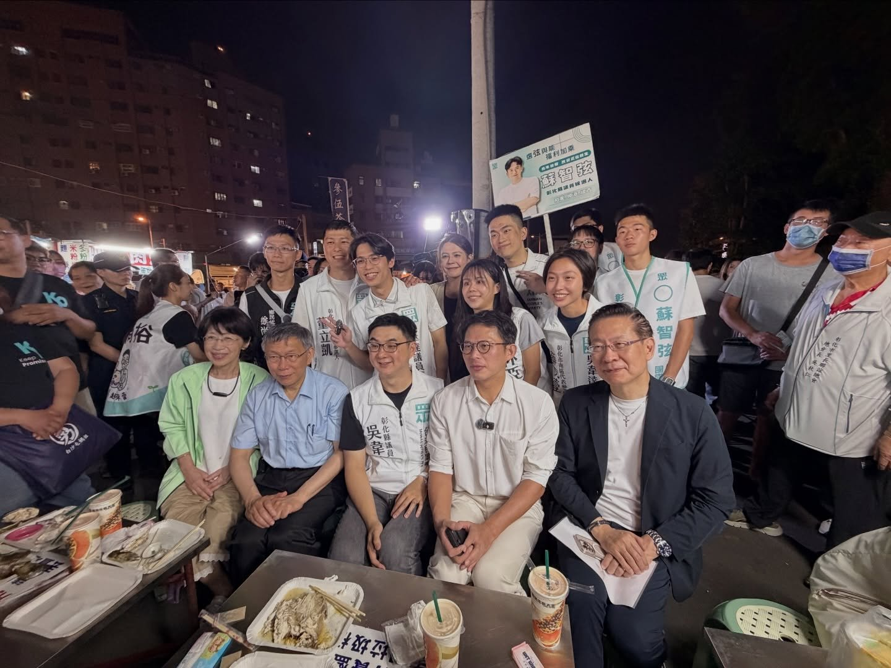
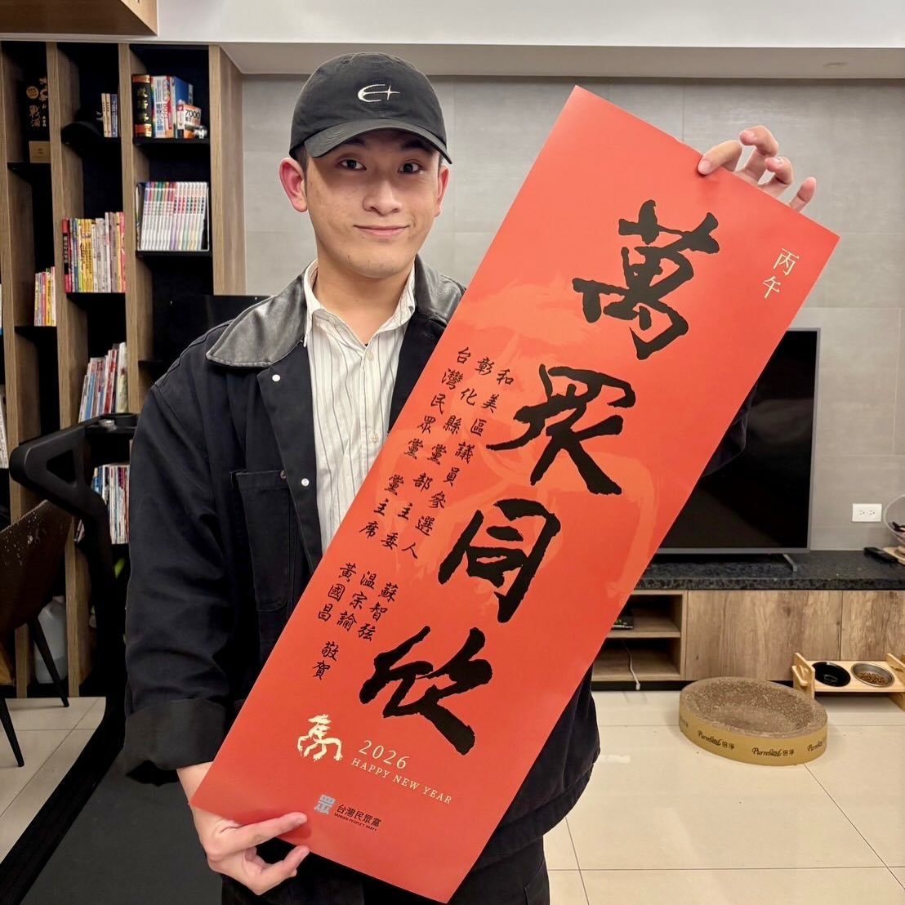
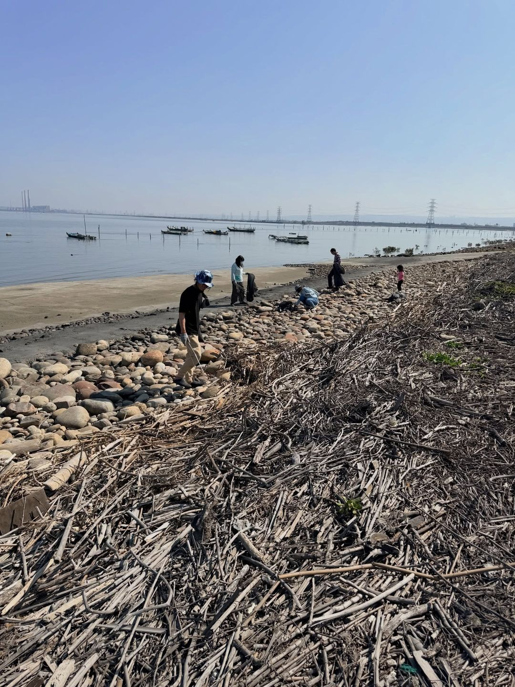

2026・彰化縣議員・第三選區
蘇智弦 SU CHIH-HSUAN ・ AGE 23
選弦×與能
福利＋加乘
A NEW GENERATION VOICE FOR CHANGHUA COUNTY
2026 ELECTION

NO. 待抽號
身為 00 後出身的年輕人，從小看著台灣社會被藍綠惡鬥撕裂——選舉時的對立、執政時的零和、民生議題被意識形態綁架。我希望由我們這一代突破藍綠買票政治，把焦點還給「事情本身」：交通通不通、孩子有沒有照顧、青年願不願意留下來。
長輩有經驗，青年有銳氣——這兩者不是對立，而是缺一不可的合作關係。智弦從家族企業高北木瓜牛乳到立法院法案助理、從泰北志工到國際企業學位，學到的是：跨世代對話，才能把彰化從「全國第一大縣的記憶」帶回到實際的進步。
民國 92 年 8 月 19 日於彰化出生，今年（2026）8/19 滿 23 歲，剛達到民意代表被選舉人年齡門檻。家中經營高北木瓜牛乳連鎖飲料店，從小在和美長大、求學、回家幫忙水果加工與夜市服務員工作。
從縣立大成國小數理資優班、精誠中學國中部數理資優班、國立彰化高中，到中國文化大學國際企業管理學系 + 政治學系雙主修畢業（總成績 85+ / 系排 20%）。在求學期間擔任康輔社副社長、學友會副會長、國際志工團，主辦偏鄉夏令營、老人安養服務、泰北志工團（獲教育部 114 年青年海外和平志工績優團隊「特優」）。
退伍後曾在美國 Grand View Lodge 渡假村擔任房務人員四個月，熟稔基層服務業現場。114 年 4 月起進入立法院，目前擔任立法委員廖先翔法案助理，是國會最年輕法案助理之一——身為民眾黨員，他選擇用實務經驗而非政黨色彩看待立法工作。
「我希望未來身為民代
能有接納、包容、妥協
與公平分配資源的能力。」
跨領域、跨地理、跨世代——智弦的養成不在彰化結束。
他帶著對「外面世界怎麼運作」的觀察回到家鄉，不是要套用模板，而是要找出最適合彰化的解。
從和美到彰化高中，第一次離開最熟悉的家鄉生活圈。
前往泰北清萊大同中學進行教育志工服務、環境美化。獲教育部「特優」獎項。
福建、山東、北京、天津、四川、青海、上海——親眼觀察計劃經濟與都市規劃的得失。
四個月美國中部渡假村基層服務業工作，第一線體會勞工辛勤。
114.04 進入立法院，6 月轉正，成為國會最年輕法案助理之一，專責法案撰寫、質詢稿、行政。
第三選區是彰化縣的西北角，三個鄉鎮各有性格，但也共享同樣的挑戰：人口外移、傳產轉型、交通建設不足、青年留不住。
智弦相信，三鄉鎮要一起想——和美鎮的紡織重金屬、線西鄉的彰濱工業、伸港鄉的海港與農漁業——這是一個有完整產業梯隊的選區，需要的是有跨領域視野的代議者，把它整合成台中大肚烏日的下一塊腹地。
新興住宅區崛起，和美大肚大橋、國民運動中心已完工。但商圈凋零、傳產出口受阻，需要振興與轉型。
彰濱工業區所在地，肩負彰化縣製造業半邊天。需要產業升級、AI 與無人機等新興產業招商。
面對台中港，農漁業為主。需要海洋環境保護、農漁業機械化、農民保障，從第一級產業突圍。
智弦的競選之路從不在冷氣房裡。從黨主席帶隊夜市掃街、與基層民眾合影、海洋淨灘、到參與黨主席發贈春聯活動——年輕人的參選，要靠著陸戰、空戰、海戰一起打。





積極爭取彰南線、鹿港線、台中捷運綠線延伸彰化、客運路網優化。讓和美、線西、伸港不只是台中的腹地，而是真正擁有完整交通基礎設施的副都心。
母親從事幼保工作，深知第一線辛勞。爭取育嬰兒工作人員權益、提高彰化生育率、打造優質育嬰環境。讓年輕家庭願意在彰化結婚、生子、養老。
傳統產業扶持、無人機與 AI 供應鏈招商、彰濱工業區升級。讓彰化的工業實力，從「世界第一廠商」的記憶，變成「世界第一廠商」的現在進行式。
家族企業背景讓我深知農產品供應鏈。爭取農民保障、推動全縣農業機械化、智慧化、規模經濟。讓伸港、線西的農漁產品能走出彰化、走進通路。
持續關注動保團體、兒少聯盟、護理師、保母托嬰協會等公民團體議題。為弱勢、為動物、為孩子發聲，是民代最基本的責任。
運用立法院法案助理的實務經驗，將法律專業帶進縣議會。每一份質詢稿、每一筆預算審查，都用立院的嚴謹標準把關。讓地方議會也能專業問政。
無論是道路、長照、教育、農漁業、動保，或任何和美、線西、伸港的鄉親生活疑難雜症——電話、Email、社群私訊都歡迎。每一件陳情都會建檔、追蹤、回覆。
把您的一票，交給願意跨越色彩、
帶著國際視野與立法院實務經驗的 23 歲青年。